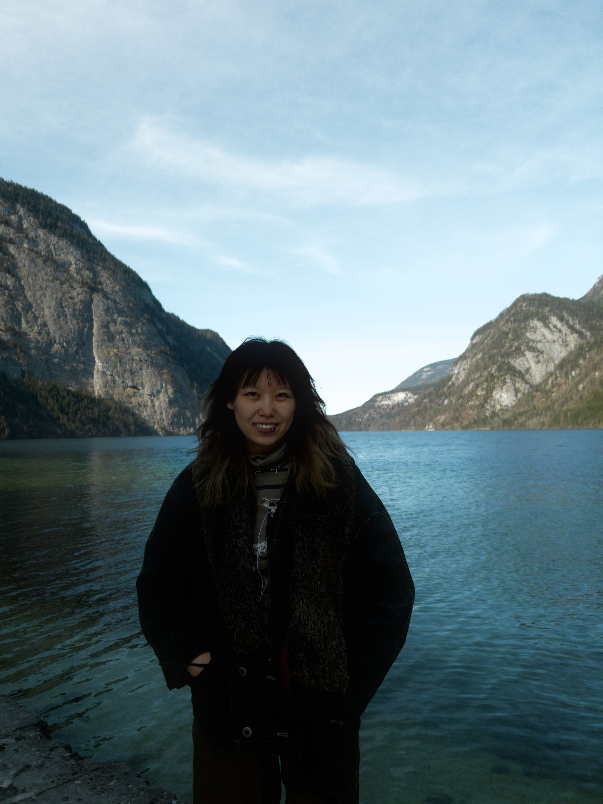

Kexun Zhang (Taiyuan, China) is an M.A. student in Curatorial Practice at the School of Visual Arts, New York. She received her Bachelor's degree in Business Administration from Nanjing University in 2022. In Spring 2024, she worked with Udo Kittelmann in Berlin, where she assisted with research on Brazilian Naïve Art in preparation of upcoming exhibition. Prior to that, she interned as an art consultant at YellowKorner in Shanghai, 2022, where she handled photography retail and assisted gallery exhibitions and events.
Several of Kexun's representative curatorial projects include:
-
How Soft You Want It, Pfizer Building, NY, 04/2024
- A collective narrative that highlights the courage to accept vulnerability as crucial to our humanity and to confront suffering, while celebrating our capacity to endure, adapt, and transform ourselves and the world around us.
-
We Used to Kneel in the Dirt: An Exploration of Ritual, Pfizer Building, NY, 04/2023
- Co-curated group exhibition with SVA MA Curatorial Practice Program cohorts, featuring eight artists, exploring the theme of ritual and its evolution in relation to human experiences and cultural practices.
-
Open Your Eyes Underwater, CP Project Space, NY, 12/2022
- An interdisciplinary exhibition showcasing five emerging and established artists.